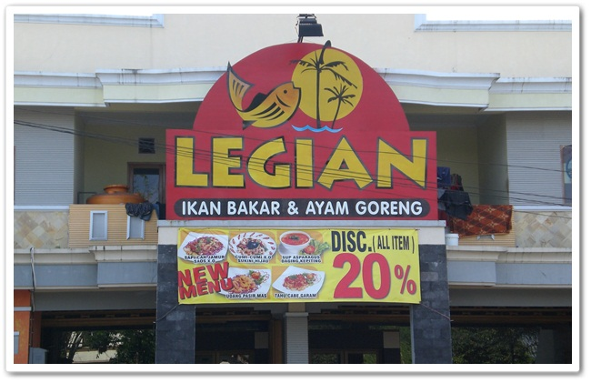
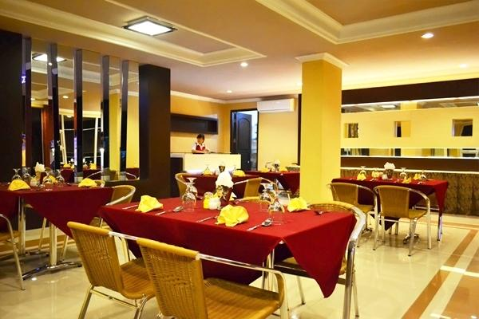

JEMBER
TOURISM


LEGIAN RESTO
Wisata Kuliner Jember yang menyediakan menu seafood yaitu Legian Resto. Tetapi saat ini, resto legian sudah menyediakan berbagai varian makanan.

legian resto ini letaknya di Jalan Gajah Mada No.234, Kaliwates, Kabupaten Jember, Jawa Timur 68131.
Resto memiliki jam kerja dari 10.00 - 22.00
jika kalian ini memboking tempat, kalian langsung menghubungi via website ataupun telfon.
http://restolegian-jember.blogspot.com/p/promo.html
Telepon: (0331) 429888